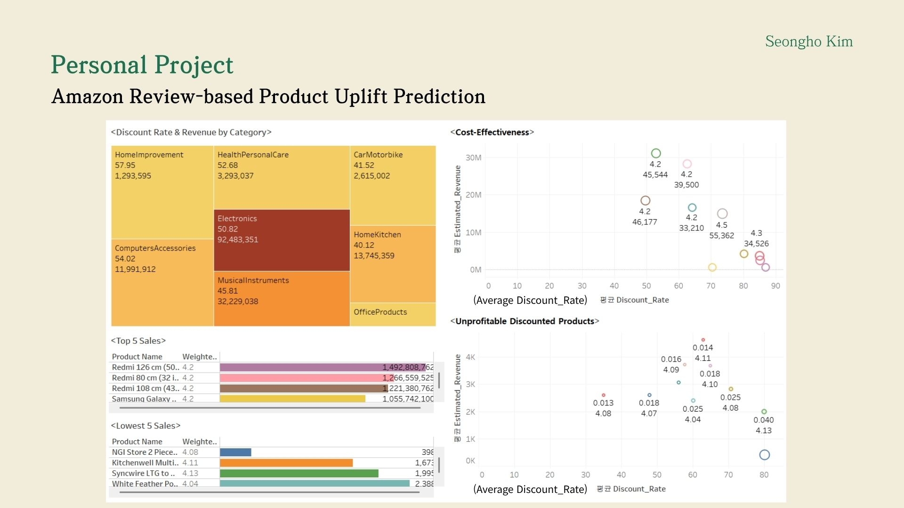
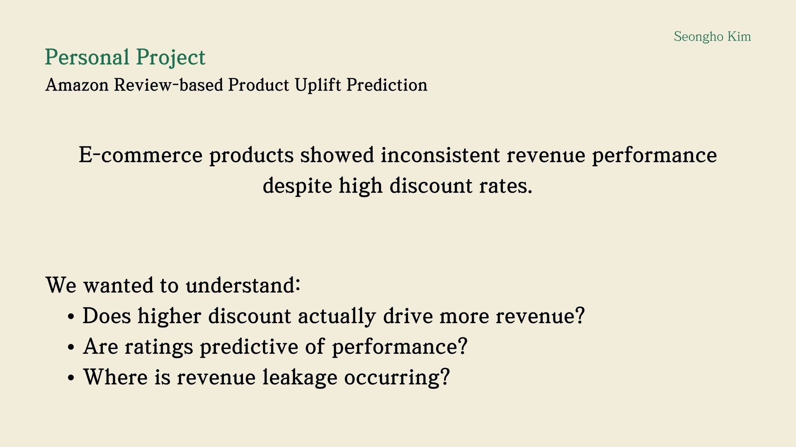
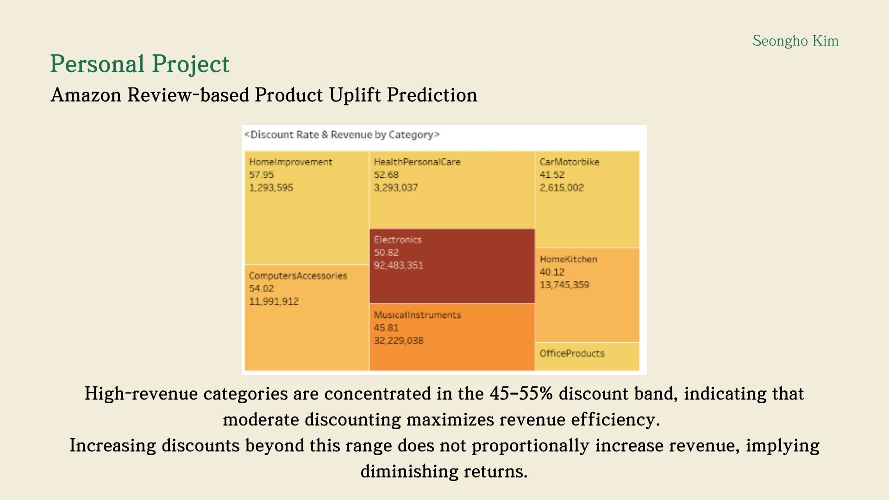
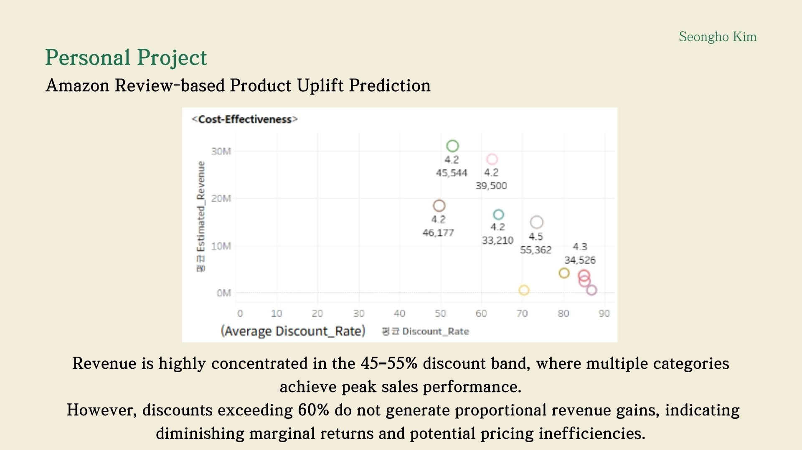
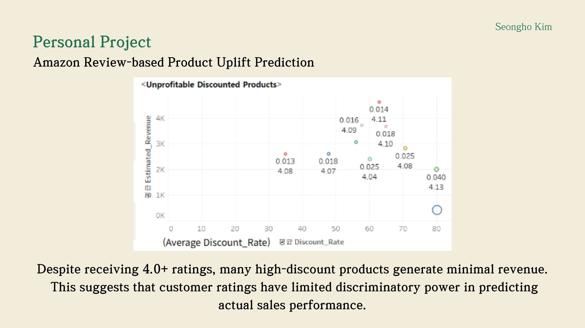

This project investigates why many e-commerce products fail to generate revenue despite high discounts and strong ratings. I built a product-level analytics and AI pipeline that combines structured data with GPT-based review analysis to identify revenue leakage and predict improvement potential.

The core business question was whether higher discounts actually drive revenue. Initial observations showed inconsistent performance across products, suggesting that pricing and ratings alone are insufficient indicators of sales outcomes.

Revenue is highly concentrated in the 45%–55% discount range, indicating that moderate discounting maximizes efficiency. Increasing discounts beyond this range does not proportionally increase revenue, showing clear diminishing returns.

The cost-effectiveness analysis further confirms that revenue peaks at moderate discount levels. Products with excessive discounts often fail to generate meaningful revenue, highlighting pricing inefficiency.

Many products with ratings above 4.0 still generate minimal revenue. This demonstrates that ratings and discount rates have limited explanatory power and fail to capture true product performance.

A distinct group of high-discount, low-revenue products emerges. This reveals that underperformance is driven by product-level issues rather than pricing alone.
To identify root causes, I used GPT to analyze customer reviews and extract product-level pain points. These insights were transformed into structured features and incorporated into a predictive uplift model.
Across 1,737 products, the model identified 257 products (14.8%) with clear improvement potential. This confirmed that product-level issues, not pricing alone, drive underperformance.